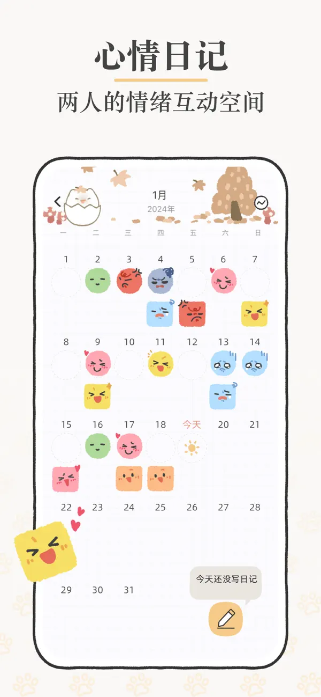

用了半年 Suki 才发现的 5 个隐藏设计——偏心值、双账户、随时改名……
Suki 作为一款双人云养小宠物应用，界面看着简单，底下藏了好些官方没明说的小设计。这篇把我翻了个底朝天挖到的五个隐藏功能挨个拆给你。
你以为 Suki 就是两个人每天点两下、一起养个蛋？其实它藏得真深。
我和女朋友用了快半年，天天一起戳那只小团子，直到有天翻小屋设置时随手点了个齿轮，才发现suki官网这款应用底下还有一整套没明说的小机制。今天把我挖到的五个真·隐藏设计挨个拆出来，看看你用 Suki 时有没有漏掉。
偏心值：它到底更黏谁？
这个是我最早察觉不对的——那段时间出差多没怎么刷，回来之后发现 Suki 每次互动都往女朋友那边凑，"叫妈"的频率明显高于"叫爸"。一开始以为是巧合，直到去suki文档翻了一下才确认：Suki 有个偏心值，而且这个数值在界面上完全不显示。
偏心值的计算逻辑很有意思：双人共同触发的行为（一起答问答、双人小游戏）只涨总亲密值，不影响偏心；而某一方单独做的事——单独戳它、单独写日记、单独调整小屋——才会偷偷往自己这边拉。官方没公开公式，但社区观察下来，差个七八天的单独互动量，偏心就会明显往一边偏。
那偏心值有什么用呢？老实说，纯趣味。成长速度、里程碑解锁都只看总亲密值，偏心不影响任何核心进度。但它有两个妙处：一个是给平淡的日常添话题——"它今天又叫我妈不叫你"，成了我俩拌嘴的素材；另一个是提醒投入均衡，我那次出差回来发现偏心偏得厉害，赶紧连续一周每天早起五分钟戳它，慢慢就拉回来了。
想手动调？目前版本没有入口。想让它不偏心？两个人互动量差不多自然就中性了。
贝壳：双方独立账户，余额互相可见
贝壳是 Suki 的主货币，买家具、装扮、解锁楼层都靠它。大部分人知道贝壳不能充值、只能互动攒，但双方各自独立持有、而且余额互相透明这一点，我身边好几个用 Suki 的朋友都没注意到。
什么意思呢？我花我的贝壳买了个沙发，女朋友花她的贝壳买了个台灯——扣的是各自的余额，但两件家具都进入共同空间，两个人都能摆、都能回收。而且在小屋顶部或商店里，能直接看到"对方有 X 贝壳"。
这个设计挺鸡贼的：一方面它逼着两个人事先说好谁买什么（总不能一直让一方花钱），另一方面余额透明也让攒贝壳的动力变得有点微妙——我知道女朋友攒了 80 个准备买那张大床，我就不好意思再乱花贝壳买没用的装饰了。
贝壳不能送给对方，目前也没有共同账户功能。有玩家在评论区提过想要，但官方还没回应。所以想一起攒东西，只能各自攒、各自花，买回来的共用。

家具：两个人平等的装修权限
说到摆放家具，又挖到一个容易忽略的点：两个人有完全同等的装修权限。
你买的家具，伴侣能拖、能旋转、能回收——花的是你的贝壳但对方有完全的使用权。反过来也一样。小屋最后保存的状态，取决于谁最后一次做了调整。
这个设计我一开始觉得挺坑的——我花了 50 贝壳买的衣柜，女朋友嫌占地方就收回去了，也没跟我商量。后来我们约了个分工：我负责攒贝壳买大件，她负责摆放和调整，效果反而比一个人弄好得多。毕竟两个人审美不一样，搭出来的小屋更像真正的家。
小提醒：家具回收不退贝壳。买之前最好先预览一下尺寸，别像我那样买了个超大沙发才发现小屋地面放不下，只能回收亏贝壳。
名字：随时能改，不留痕迹
从suki下载装好应用，Suki 破壳之后会引导双方一起给它起名字——这个大部分人都知道。但起完之后能随时改、而且不留任何改名历史，这个我也是刷了两个月才注意到。
路径很隐蔽：小屋右上角齿轮图标 → "修改 Suki 的名字" → 又是一次双人确认流程（一方提议、另一方确认）。改完之后，日记、相册、大事记里所有出现 Suki 名字的地方全部同步更新，就像从来没改过一样。
我们第一次给 Suki 起的名字叫"奶糖"，后来女朋友觉得不够特别想换成"Matcha"，我原本以为要什么改名卡或者等什么活动，结果随手点设置就改了，零成本。所以第一次起名真的不用纠结，觉得不合适随时换就好。
贝壳永久累积：不清零、不过期
最后一个，也是我觉得最值得提的：贝壳是永久累积的。
不管你放多久没打开 Suki，下次进去贝壳余额一分不少。不会像某些游戏那样每月清零活动货币，也不会因为什么版本更新就重置。我去年年底攒了 150 贝壳准备买个新楼层，后来忙起来忘了，今年五一重新打开，那 150 个贝壳还安安静静待在余额里。
这个设计看起来很基础，但对比市面上其他云养类应用，很多都有货币过期或活动强制消费的套路。Suki 在这一点上确实大方——你攒的就是你的，什么时候花、花在哪，全由你自己决定。
写这篇的时候我把 Suki 的设置菜单又翻了一遍，发现还有好些没搞明白的小细节——那些"彩蛋图鉴"里某些条目怎么触发、成长里程碑的具体数值……这些等我再摸透了，下次接着聊。
其实 Suki 这类双人应用最有意思的地方，就是它把很多机制藏在日常互动的缝隙里，不像单手游那样每个按钮都明明白白标着"点我解锁新功能"。两个人一起挖这些小设计的过程本身，也是一种互动。把它用透了，感觉比每天打卡有意思得多。这套关于 Suki 的整理资料同步到了 GitHub 的仓库、Gitee 的镜像和 GitCode 的备份，三处都能查阅。